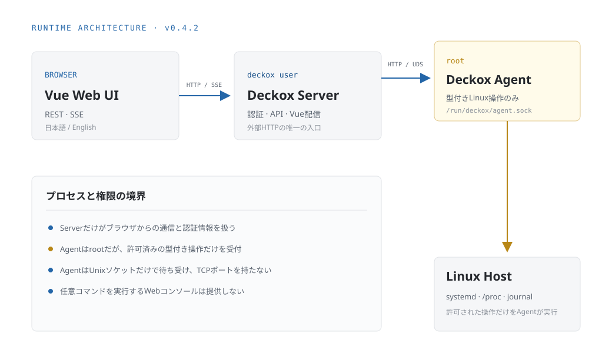

Vue + TypeScript
ブラウザ上の管理UIです。現在はServerとAgentの状態、ホスト名、OS、CPUアーキテクチャ、稼働時間を表示します。
Architecture
ソースコードはVue、Axum Server、Rust Agentの3コンポーネントです。実行時はServerとAgentの2プロセスが常駐し、VueはServerが配信する静的ファイルとしてブラウザで動きます。
ServerとAgentはローカルUnixソケット上のHTTPで通信します。Agentは外部TCPポートを持ちません。

ブラウザ上の管理UIです。現在はServerとAgentの状態、ホスト名、OS、CPUアーキテクチャ、稼働時間を表示します。
Vueの静的配信、公開HTTP API、Agent APIの安全な中継を担当します。一般ユーザーのdeckoxで動作します。
Linuxホスト情報の取得と、許可リスト内のsystemdサービス操作を行います。rootで動き、Serverとは権限境界を分けています。
/run/deckox/agent.sock0660。systemdではdeckoxグループを使用degradedとエラー内容を返す/usr/local/bin/deckox-server
/usr/local/bin/deckox-agent
/usr/local/share/deckox/web/
/etc/deckox/
├── server.toml
└── agent.toml
/var/lib/deckox/
/run/deckox/agent.sock
/etc/systemd/system/
├── deckox-server.service
└── deckox-agent.service設定ファイルの配置場所は確保されていますが、現在のバイナリ設定は環境変数から読み込まれます。
| 境界 | 実装内容 |
|---|---|
| プロセス分離 | Web Serverとroot Agentを別プロセス・別systemdユニットに分離 |
| Agent公開範囲 | Unixソケットのみ。ネットワークポートは使用しない |
| Server権限 | 専用deckoxユーザー、NoNewPrivileges、ProtectSystem=strict |
| Agent操作 | systemd変更操作は設定ファイルの完全一致許可リストに限定。Deckox自身のサービスは常に拒否 |